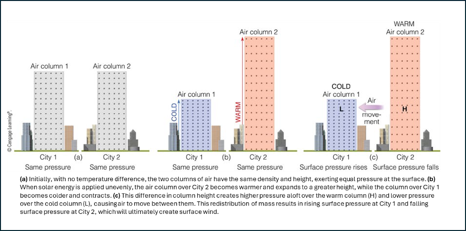
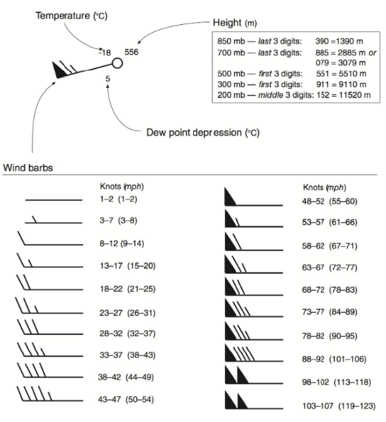

📋 For This Lab
Instructions
- Study the key terms and upper air analysis concepts
- Complete all analysis questions about pressure surfaces and wind patterns
- Monitor your progress using the progress bar at the top of the page
- Your work is automatically saved as you type
- When complete, click "Download file for Canvas Submission"
- Locate and upload this file to Canvas:
- Lab06_UpperAirAnalysis.txt (answer file)
💡 Tip: Focus on understanding pressure surfaces and how they relate to weather patterns at different altitudes.
Introduction: Decoding the Atmosphere in 3D
Upper-air analysis is a cornerstone of modern meteorology, providing a three-dimensional view of the weather patterns that shape our daily lives. While surface weather maps give us a snapshot of conditions at ground level, the true drivers of weather systems—large-scale winds, pressure systems, and temperature contrasts—are found high above. This lab explores the interpretation of upper-air charts, which map meteorological conditions not at a fixed height, but on a constant pressure surface.
Background
Key Terms & Concepts
- Pressure Surface: An imaginary surface where the atmospheric pressure is the same everywhere. Common surfaces are 850-mb, 500-mb, and 200/300-mb, each representing different altitudes in the atmosphere.
- Contour Interval: The difference in value between adjacent contour lines on a map. For upper-air charts, this usually refers to the height difference (in meters or decameters) between lines.
- Height Contour: A line connecting points of equal height above sea level for a given pressure surface. These contours reveal the shape of the pressure surface and help identify ridges, troughs, and gradients.
- Advection: The horizontal movement of air, carrying properties like temperature or moisture from one place to another. Warm air advection means warmer air is moving into a region; cold air advection means colder air is moving in.
- Dew Point Depression: The difference between the air temperature and the dew point temperature. A small depression means the air is nearly saturated (humid); a large depression means drier air.
- Wind Barb: A symbol used to show both wind speed and direction. The shaft points in the direction the wind is coming from; barbs and flags indicate speed (each full barb = 10 knots, half barb = 5 knots, flag = 50 knots).
- Jet Stream: A fast-moving ribbon of air found near the top of the troposphere (200/300-mb level). Jet streams steer weather systems and are associated with strong wind speeds.
- Ridge: An elongated area of relatively high heights (pressure aloft), often associated with warmer, drier, and more stable weather.
- Trough: An elongated area of relatively low heights (pressure aloft), often associated with cooler, unsettled, and stormier weather.
The key to understanding these charts is realizing that the altitude of a given pressure surface changes based on the temperature of the air column. Warmer, less dense air expands, pushing the pressure surface to a higher altitude. Colder, denser air contracts, causing the pressure surface to be found at a lower altitude. This difference in column height creates higher pressure aloft over a warm column and lower pressure over a cold column, causing air to move. This redistribution of mass results in rising surface pressure under the cold column and falling surface pressure under the warm column, which ultimately creates surface wind.
The station model for upper-air charts plots key data points including temperature, dew point depression, wind, and the height of the pressure surface.
